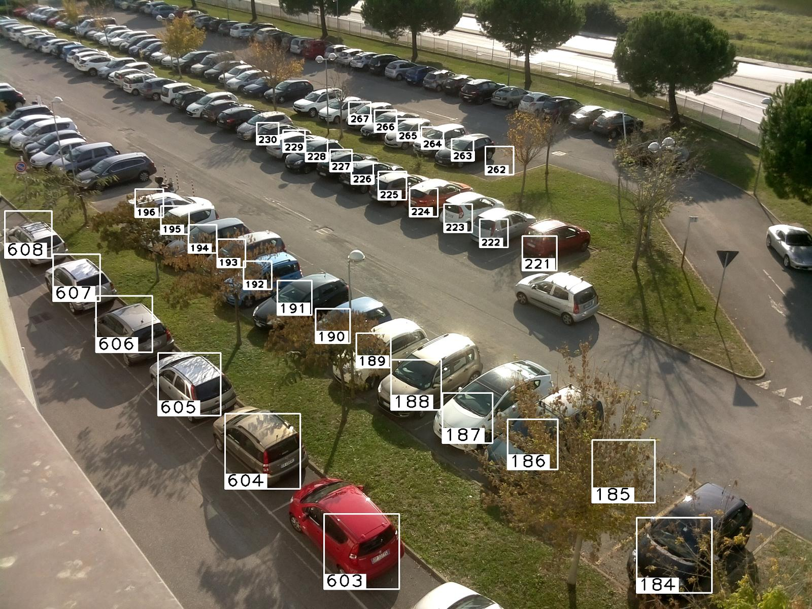

Посмотрите, как работает OQIM
Реальные дорожные записи Лондона, парковочные камеры и пошаговый пример распределения водителей.
Пять камер на одной улице
Лондон · Marylebone Road → Euston Road. Выберите перекрёсток на схеме и нажмите ▶ под видео.
Последний доступный ролик TfL ↗
Что видит парковочная камера
Видео: автомобиль освобождает место
12-секундный пример для существующего детектора. Откройте анализ, затем нажмите «Реальная парковка» — результат будет вычислен на устройстве.
Открыть видеоаналитику →
Белые рамки — разметка авторов CNRPark-EXT. Ракурсы одной парковки помогают проверять распознавание. Это архивные фотографии, не прямой эфир и не парковка в Лондоне.
Почему следующему водителю — другой маршрут
Все числа ниже заданы для объяснения. Они не вычислены из лондонских записей. Нажимайте «Добавить водителя» и следите за дорогами и местами.
Рекомендация учитывается как ожидаемая поездка, а не физическая бронь. В этом примере поездки остаются в расчёте до сброса. Состояние хранится только в этой вкладке.
Для реального сервиса нужен общий учёт рекомендаций всех пользователей, срок их действия и сверка с новыми наблюдениями камер. Здесь показан принцип: выбранные маршруты меняют расчёт для следующих водителей.